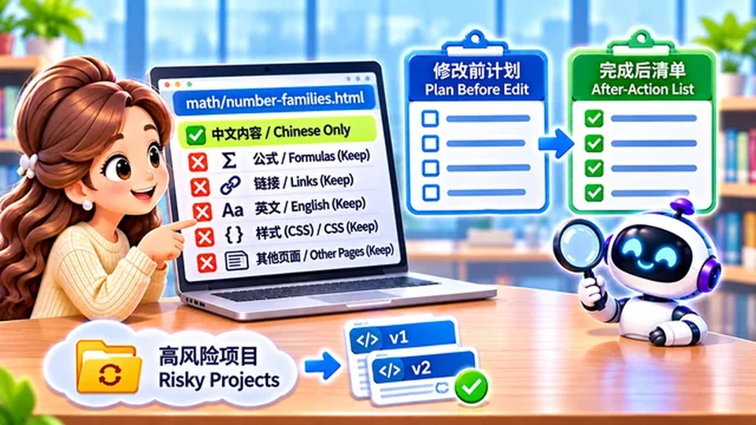

Welcome back to Kiwi 爱AI Study. Last episode sharpened how we talk with AI; today we focus on getting work finished reliably.
We need more than a strong prompt. We need habits: clarify fuzzy asks, pick the right tool, split big jobs, fence what must not change, define “done,” and check with real evidence.
When AI says “all finished,” treat that as a claim to test — not a certificate.
You do not need all seven habits today — pick the two that would have saved your last frustrating session, and practise those on the next assignment.
From plan to verify
Seven habits follow the teaching order: clarify, tool, slices, scope, acceptance, verify, then debug.
Methods one through five happen before you celebrate; six and seven keep the work honest after AI answers.
Method 1 — Clarifying questions
Sometimes we have not finished thinking. “Put three books in one row” might mean mobile layout only, desktop only, or both. Tell AI: if my ask is ambiguous, ask up to three key questions and do not edit files until we agree.
Episode 12 sharpened your wording; method one catches incomplete intent before anyone edits production files.
Simple, low-risk jobs can skip the quiz. Save this for high-cost, incomplete, or wide-reaching changes.
Method 2 — Choose the right tool
If the same tool fails the same kind of job again and again, rewriting the prompt is not always the answer. Try a product built for that work, or a model tier that handles it better.
Episode 11’s “wrong tool” checklist belongs here: need a surgical image edit but only have full regeneration? Swap workshops, then tune the prompt.
A better tool does not remove the need for scope lines or acceptance checks — it just stops you from blaming words when the product never supported the job.
Method 3 — Task decomposition
Do not ask for twenty web pages in one breath. Fix one page, inspect, then batch the rest. Smaller steps surface bugs earlier and keep rollback possible.
School parallel: finish Section 2, show your teacher, unlock Section 3 — same rhythm for AI site refactors and batch translations.
Each stage should end with evidence you can repeat tomorrow: a screenshot, a diff list, or one page that passes your checklist.

Method 4 — Scope and constraints
You wanted one Chinese title updated — and AI also retouched English, navigation, and the hero image. Say what not to touch: “Only math/number-families.html Chinese copy; leave formulas, links, English, CSS, and other pages alone.”
Ask for a plan list before edits and an after-action list when done — then scan for scope creep. That is scope control: the task boundary in writing.
Navigation, language toggles, and shared CSS are the usual accidental edits — list them under do not touch, not only the one page you meant to change.
When the after-action list is longer than the plan, treat each extra file as scope creep: diff it, revert if needed, and tighten the prompt before the next pass.
On risky projects, commit or back up first. A wrong AI pass is easier to unwind when version history exists.
Write the fence before the edit — not from memory after. Name the files that may change, the pages and stylesheets that must stay untouched, and ask for a before-and-after file list so scope creep shows up as a diff instead of a surprise in production.
Method 5 — Acceptance criteria
“Make eight pretty images” is vague. Better: eight files; each 640×360; 16:9 WebP; consistent characters; full laptop in frame; no logo; no blurred padding.
For site work: Chinese toggle works; English unchanged; desktop and mobile checked; math renders; every link live. AI should return checkable artifacts, not vibes.
Prefer outputs you can tick off — file list, test log, or spot-check table — over a cheerful “all finished.”
Verify, challenge, reset
Method six is the habit students skip most: trusting green checkmarks in chat instead of opening the real file.
Method 6 — Verify, challenge, reset
Verify — use repeatable checks: calculator for math, run tests for code, open the site in a browser — not only AI saying “done.”
Challenge — name the mismatch, ask for evidence, and flag what is still unproven.
Reset — if guessing loops, stop, list proven facts, and run one smallest next test. Do not treat guesses as settled causes.
“Think deeply” does not replace evidence. Challenge does not guarantee a fix on the first try — your judgment at key gates still matters.
You asked to shrink an image title — and the background shifted too. Tell AI to list unintended diffs between old and new, not redesign from scratch.
When mobile titles wrap badly, resist “rewrite the whole page.” Ask AI to diagnose first, propose the smallest patch, and leave desktop alone until evidence supports more.
Memory hook: verify first, challenge with specifics, reset when the thread turns into guesswork — do not stack edits on a wrong root cause.
Debug with AI, read with care
Method seven is not “never read code.” It is read at the depth the risk deserves.
Method 7 — AI-assisted debugging
Hand AI the error text, repro steps, expected behaviour, and relevant files. Example: “After I click the China flag, math vanishes — inspect language-switch files, explain what happened, how to verify, and do not edit code yet.”
Then discuss behaviour before diving into syntax. Ask for a minimal patch, affected files, tests, and a before/after diff — but for security, money, or privacy paths, you may still need to read source yourself.
Skipping line-by-line reading is a workflow choice, not permission to stay ignorant of data flow. You still judge whether the explanation matches how the system should behave.
Done is a test result
AI saying “complete” is not the finish line. Pass the job through tests, screenshots, diffs, and spot checks you can repeat tomorrow.
When the same failure repeats, change method — scope, tool, stages, or proof — not only the adjectives in the prompt.
Next episode asks why language, math, and code still matter when AI can draft all three.
Takeaway: Reliable AI work is a loop — plan, narrow scope, define done, verify, challenge, reset.